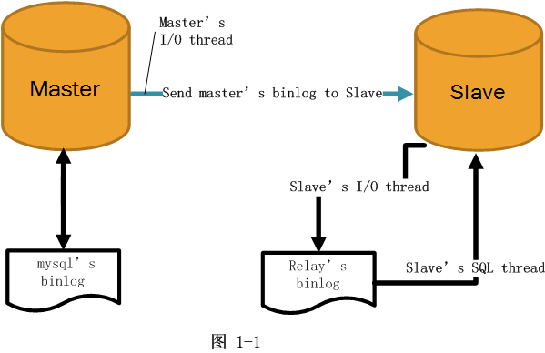
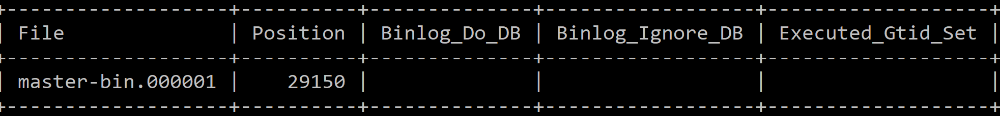
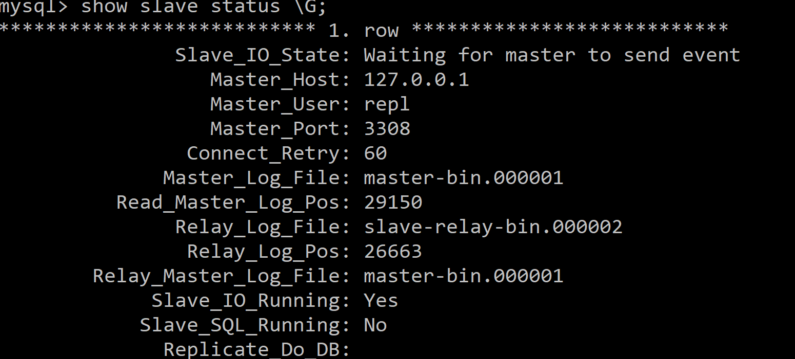

<!DOCTYPE html>
<html>
<head><meta name="generator" content="Hexo 3.8.0">
  <!-- hexo-inject:begin --><!-- hexo-inject:end --><meta charset="utf-8">
  

  
  <title>MySQL Master-Slave Replication | TongTong Shi&#39;s Blog</title>
  <meta name="viewport" content="width=device-width, initial-scale=1, maximum-scale=1">
  <meta name="description" content="In this post, we will introduce how to setting up matser-slave replication in MySQL. First why we want to use MySQL master-slave replication is in our application, the times users read data is much mo">
<meta name="keywords" content="Database">
<meta property="og:type" content="article">
<meta property="og:title" content="MySQL Master-Slave Replication">
<meta property="og:url" content="http://yoursite.com/2019/07/24/db-master-slave-replication/index.html">
<meta property="og:site_name" content="TongTong Shi&#39;s Blog">
<meta property="og:description" content="In this post, we will introduce how to setting up matser-slave replication in MySQL. First why we want to use MySQL master-slave replication is in our application, the times users read data is much mo">
<meta property="og:locale" content="default">
<meta property="og:image" content="http://yoursite.com/2019/07/24/db-master-slave-replication/mysql-replication-principle.png">
<meta property="og:image" content="http://yoursite.com/2019/07/24/db-master-slave-replication/masterstatus.png">
<meta property="og:image" content="http://yoursite.com/2019/07/24/db-master-slave-replication/slavestatus.png">
<meta property="og:updated_time" content="2019-07-24T18:24:44.628Z">
<meta name="twitter:card" content="summary">
<meta name="twitter:title" content="MySQL Master-Slave Replication">
<meta name="twitter:description" content="In this post, we will introduce how to setting up matser-slave replication in MySQL. First why we want to use MySQL master-slave replication is in our application, the times users read data is much mo">
<meta name="twitter:image" content="http://yoursite.com/2019/07/24/db-master-slave-replication/mysql-replication-principle.png">
  
    <link rel="alternate" href="/atom.xml" title="TongTong Shi&#39;s Blog" type="application/atom+xml">
  
  
    <link rel="icon" href="/favicon.png">
  
  
    <link href="//fonts.googleapis.com/css?family=Source+Code+Pro" rel="stylesheet" type="text/css">
  
  <link rel="stylesheet" href="/css/style.css"><!-- hexo-inject:begin --><!-- hexo-inject:end -->
</head>
</html>
<body>
  <!-- hexo-inject:begin --><!-- hexo-inject:end --><div id="container">
    <div id="wrap">
      <header id="header">
  <div id="banner"></div>
  <div id="header-outer" class="outer">
    <div id="header-title" class="inner">
      <h1 id="logo-wrap">
        <a href="/" id="logo">TongTong Shi&#39;s Blog</a>
      </h1>
      
    </div>
    <div id="header-inner" class="inner">
      <nav id="main-nav">
        <a id="main-nav-toggle" class="nav-icon"></a>
        
          <a class="main-nav-link" href="/">Home</a>
        
          <a class="main-nav-link" href="/archives">Archives</a>
        
      </nav>
      <nav id="sub-nav">
        
          <a id="nav-rss-link" class="nav-icon" href="/atom.xml" title="RSS Feed"></a>
        
        <a id="nav-search-btn" class="nav-icon" title="Search"></a>
      </nav>
      <div id="search-form-wrap">
        <form action="//google.com/search" method="get" accept-charset="UTF-8" class="search-form"><input type="search" name="q" class="search-form-input" placeholder="Search"><button type="submit" class="search-form-submit">&#xF002;</button><input type="hidden" name="sitesearch" value="http://yoursite.com"></form>
      </div>
    </div>
  </div>
</header>
      <div class="outer">
        <section id="main"><article id="post-db-master-slave-replication" class="article article-type-post" itemscope itemprop="blogPost">
  <div class="article-meta">
    <a href="/2019/07/24/db-master-slave-replication/" class="article-date">
  <time datetime="2019-07-24T14:33:05.000Z" itemprop="datePublished">2019-07-24</time>
</a>
    
  </div>
  <div class="article-inner">
    
    
      <header class="article-header">
        
  
    <h1 class="article-title" itemprop="name">
      MySQL Master-Slave Replication
    </h1>
  

      </header>
    
    <div class="article-entry" itemprop="articleBody">
      
        <p>In this post, we will introduce how to setting up matser-slave replication in MySQL. First why we want to use MySQL master-slave replication is in our application, the times users read data is much more than the times they edit data. To make our database more effiecient, we want to use master-slave replication, seperating read and write operations.</p>
<a id="more"></a>
<h2 id="font-colordodgerbluewhat-is-master-slave-replicationfont"><a class="markdownIt-Anchor" href="#font-colordodgerbluewhat-is-master-slave-replicationfont"></a> <font color="dodgerblue">What is master-slave replication?</font></h2>
<p>MySQL replication is a process that enables data from one MySQL database server(the master) to be copied automatically to one or more MySQL database servers(the slaves). It is a <strong>one-way replication(from master to slave)</strong>, only the master database is used for the write operations, while read operations are spread on multiple slave databases.</p>
<h2 id="font-colordodgerblueits-advantagesfont"><a class="markdownIt-Anchor" href="#font-colordodgerblueits-advantagesfont"></a> <font color="dodgerblue">Its advantages</font></h2>
<ul>
<li>Analytic applications can read from the slave(s) without impacting the master</li>
<li>Backups of the entire database of relatively no impact on the master</li>
<li>Slaves can be taken offline and sync back to the master without any downtime</li>
</ul>
<h2 id="font-colordodgerblueprinciplefont"><a class="markdownIt-Anchor" href="#font-colordodgerblueprinciplefont"></a> <font color="dodgerblue">Principle</font></h2>

<p>The above image explains the principle of master-slave replication.</p>
<ul>
<li><strong>Step 1:</strong> The data changes in master database server firstly are written in <strong>mysql’s binary log</strong>.</li>
<li><strong>Step 2:</strong> The <strong>master’s binary log</strong> is read by the <strong>slave’s IO thread</strong> and then written to <strong>slave’s relay log</strong>.</li>
<li><strong>Step 3:</strong> <strong>Slave’s SQL thread</strong> reads the <strong>relay log</strong> and write it to <strong>slave database server</strong>.</li>
</ul>
<h2 id="font-colordodgerbluesetting-up-stepsfont"><a class="markdownIt-Anchor" href="#font-colordodgerbluesetting-up-stepsfont"></a> <font color="dodgerblue">Setting up steps</font></h2>
<p>Next, we will explain how to realize MySql master-slave replication on both database and code levels.</p>
<h3 id="font-colormediumslateblue1-modify-database-configurationsfont"><a class="markdownIt-Anchor" href="#font-colormediumslateblue1-modify-database-configurationsfont"></a> <font color="MEDIUMSLATEBLUE">1. Modify Database configurations</font></h3>
<p><font color="MEDIUMSEAGREEN"><strong>Step 1: Create master and slave database servers</strong></font></p>
<p>The version of master database must be lower or equal than that of ther slave database. So we use <em>MySQL 5.7</em> as the <em>master</em> database and <em>MySQL 8.0</em> as the <em>slave</em> database.</p>
<p><font color="MEDIUMSEAGREEN"><strong>Step 2: Configurate master and slave database servers</strong></font></p>
<p>We need to configurate <font color="orange"><strong>1) Binary log, 2) Relay log, and 3) assign the master server to the slave server</strong>.</font></p>
<ul>
<li><strong>Configurate binary log</strong>: in <code>C:\ProgramData\MySQL\MySQL Server 5.7\my.ini</code>, do modification like this.</li>
</ul>
<figure class="highlight ini"><table><tr><td class="gutter"><pre><span class="line">1</span><br><span class="line">2</span><br><span class="line">3</span><br><span class="line">4</span><br><span class="line">5</span><br><span class="line">6</span><br></pre></td><td class="code"><pre><span class="line"><span class="attr">port</span>=<span class="number">3308</span></span><br><span class="line"><span class="comment"># Server Id.</span></span><br><span class="line"><span class="attr">server-id</span>=<span class="number">1</span></span><br><span class="line"><span class="comment"># Binary Logging.</span></span><br><span class="line"><span class="attr">log-bin</span>=master-bin</span><br><span class="line"><span class="attr">log-bin-index</span>=master-bin.index</span><br></pre></td></tr></table></figure>
<ul>
<li><strong>Configurate Relay log</strong>: in <code>C:\ProgramData\MySQL\MySQL Server 8.0\my.ini</code>, do modification like this.</li>
</ul>
<figure class="highlight ini"><table><tr><td class="gutter"><pre><span class="line">1</span><br><span class="line">2</span><br><span class="line">3</span><br><span class="line">4</span><br><span class="line">5</span><br><span class="line">6</span><br></pre></td><td class="code"><pre><span class="line"><span class="attr">port</span>=<span class="number">3306</span></span><br><span class="line"><span class="comment"># Server Id.</span></span><br><span class="line"><span class="attr">server-id</span>=<span class="number">2</span></span><br><span class="line"></span><br><span class="line"><span class="attr">relay-log-index</span>=slave-relay-bin.index</span><br><span class="line"><span class="attr">relay-log</span>=slave-relay-bin</span><br></pre></td></tr></table></figure>
<p>After modifying <code>my.ini</code> files, we need to restart the servers. We can use command shell command <code>net stop server_name; net start server_name</code>.</p>
<ul>
<li><strong>Assign master server to slave server</strong>.</li>
</ul>
<p>Go to the <strong>master server</strong>, check its status.</p>
<figure class="highlight sql"><table><tr><td class="gutter"><pre><span class="line">1</span><br></pre></td><td class="code"><pre><span class="line"><span class="keyword">SHOW</span> <span class="keyword">MASTER</span> <span class="keyword">STATUS</span>;</span><br></pre></td></tr></table></figure>

<p>Then create replication.</p>
<figure class="highlight sql"><table><tr><td class="gutter"><pre><span class="line">1</span><br><span class="line">2</span><br><span class="line">3</span><br></pre></td><td class="code"><pre><span class="line"><span class="keyword">CREATE</span> <span class="keyword">user</span> repl;</span><br><span class="line"><span class="keyword">GRANT</span> <span class="keyword">REPLICATION</span> <span class="keyword">SLAVE</span> <span class="keyword">ON</span> *.* <span class="keyword">TO</span> <span class="string">'repl'</span>@<span class="string">'127.0.0.1'</span> <span class="keyword">IDENTIFIED</span> <span class="keyword">BY</span> <span class="string">'mysql'</span>;</span><br><span class="line"><span class="keyword">FLUSH</span> <span class="keyword">PRIVILEGES</span>;</span><br></pre></td></tr></table></figure>
<p>Go to the <strong>slave server</strong>. And type in the following command.</p>
<figure class="highlight sql"><table><tr><td class="gutter"><pre><span class="line">1</span><br><span class="line">2</span><br><span class="line">3</span><br></pre></td><td class="code"><pre><span class="line"><span class="keyword">change</span> <span class="keyword">master</span> <span class="keyword">to</span> master_host=<span class="string">'127.0.0.1'</span>,master_port=<span class="number">3308</span>,master_user=<span class="string">'repl'</span>,master_password=<span class="string">'mysql'</span>,master_log_file=<span class="string">'master-bin.000001'</span>,master_log_pos=<span class="number">0</span>;</span><br><span class="line"><span class="keyword">FLUSH</span> <span class="keyword">PRIVILEGES</span>;</span><br><span class="line"><span class="keyword">start</span> <span class="keyword">slave</span>;</span><br></pre></td></tr></table></figure>
<p>We can now check the slave status.</p>
<figure class="highlight sql"><table><tr><td class="gutter"><pre><span class="line">1</span><br></pre></td><td class="code"><pre><span class="line"><span class="keyword">SHOW</span> <span class="keyword">SLAVE</span> <span class="keyword">STATUS</span> \G;</span><br></pre></td></tr></table></figure>

<p>By now, we have completed the configuration of master-slave replication.</p>
<p><font color="MEDIUMSEAGREEN"><strong>Step 3: Assigning CRUD privileges to master and slave servers</strong></font></p>
<p>In <strong>master server</strong>, we create a new user <code>work</code>, and grant it <strong>CRUD</strong> privileges.</p>
<figure class="highlight sql"><table><tr><td class="gutter"><pre><span class="line">1</span><br></pre></td><td class="code"><pre><span class="line"><span class="keyword">GRANT</span> <span class="keyword">select</span>, <span class="keyword">insert</span>, <span class="keyword">update</span>, <span class="keyword">delete</span> <span class="keyword">ON</span> *.* <span class="keyword">TO</span> <span class="string">'work'</span>@<span class="string">'%'</span> <span class="keyword">IDENTIFIED</span> <span class="keyword">BY</span> <span class="string">'230230'</span> <span class="keyword">WITH</span> <span class="keyword">GRANT</span> <span class="keyword">OPTION</span>;</span><br></pre></td></tr></table></figure>
<p>For <strong>slave server</strong>, we do the following.</p>
<figure class="highlight sql"><table><tr><td class="gutter"><pre><span class="line">1</span><br><span class="line">2</span><br></pre></td><td class="code"><pre><span class="line"><span class="keyword">CREATE</span> <span class="keyword">user</span>  <span class="string">'work'</span>@<span class="string">'%'</span> <span class="keyword">IDENTIFIED</span> <span class="keyword">BY</span> <span class="string">'230230'</span>;</span><br><span class="line"><span class="keyword">GRANT</span> <span class="keyword">all</span> <span class="keyword">privileges</span> <span class="keyword">on</span> *.* <span class="keyword">to</span> <span class="string">'work'</span>@<span class="string">'%'</span> <span class="keyword">with</span> <span class="keyword">grant</span> <span class="keyword">option</span>;</span><br></pre></td></tr></table></figure>
<h3 id="font-colormediumslateblue2-configuration-master-salve-replication-in-our-appfont"><a class="markdownIt-Anchor" href="#font-colormediumslateblue2-configuration-master-salve-replication-in-our-appfont"></a> <font color="MEDIUMSLATEBLUE">2. Configuration master-salve replication in our app</font></h3>
<ul>
<li>
<ol>
<li>Create <code>DynamicDataSource</code> class that extends <code>AbstractRoutingDataSource</code> and override <code>determinCurrentLookupKey()</code> method.</li>
</ol>
</li>
</ul>
<figure class="highlight java"><table><tr><td class="gutter"><pre><span class="line">1</span><br><span class="line">2</span><br><span class="line">3</span><br><span class="line">4</span><br><span class="line">5</span><br><span class="line">6</span><br></pre></td><td class="code"><pre><span class="line"><span class="keyword">public</span> <span class="class"><span class="keyword">class</span> <span class="title">DynamicDataSource</span> <span class="keyword">extends</span> <span class="title">AbstractRoutingDataSource</span> </span>&#123;</span><br><span class="line">  <span class="meta">@Override</span></span><br><span class="line">  <span class="function"><span class="keyword">protected</span> Object <span class="title">determineCurrentLookupKey</span><span class="params">()</span> </span>&#123;</span><br><span class="line">    <span class="keyword">return</span> DynamicDataSourceHolder.getDbType();</span><br><span class="line">  &#125;</span><br><span class="line">&#125;</span><br></pre></td></tr></table></figure>
<ul>
<li>
<ol start="2">
<li>Create a class <code>DynamicDataSourceHolder</code> used to store info of variables like <code>DB_MATER, DB_SLAVE</code>.</li>
</ol>
</li>
</ul>
<summary> CLICK TO SEE MORE
<details> 
<figure class="highlight java"><table><tr><td class="gutter"><pre><span class="line">1</span><br><span class="line">2</span><br><span class="line">3</span><br><span class="line">4</span><br><span class="line">5</span><br><span class="line">6</span><br><span class="line">7</span><br><span class="line">8</span><br><span class="line">9</span><br><span class="line">10</span><br><span class="line">11</span><br><span class="line">12</span><br><span class="line">13</span><br><span class="line">14</span><br><span class="line">15</span><br><span class="line">16</span><br><span class="line">17</span><br><span class="line">18</span><br><span class="line">19</span><br><span class="line">20</span><br><span class="line">21</span><br><span class="line">22</span><br><span class="line">23</span><br><span class="line">24</span><br><span class="line">25</span><br><span class="line">26</span><br><span class="line">27</span><br><span class="line">28</span><br><span class="line">29</span><br><span class="line">30</span><br><span class="line">31</span><br><span class="line">32</span><br></pre></td><td class="code"><pre><span class="line"><span class="keyword">public</span> <span class="class"><span class="keyword">class</span> <span class="title">DynamicDataSourceHolder</span> </span>&#123;</span><br><span class="line"></span><br><span class="line">  <span class="keyword">private</span> <span class="keyword">static</span> Logger logger = LoggerFactory.getLogger(DynamicDataSourceHolder.class);</span><br><span class="line"></span><br><span class="line">  <span class="comment">//Ensure thread safe</span></span><br><span class="line">  <span class="keyword">private</span> <span class="keyword">static</span> ThreadLocal&lt;String&gt; contextHolder = <span class="keyword">new</span> ThreadLocal&lt;String&gt;();</span><br><span class="line"></span><br><span class="line">  <span class="keyword">public</span> <span class="keyword">static</span> <span class="keyword">final</span> String DB_MASTER = <span class="string">"master"</span>;</span><br><span class="line">  <span class="keyword">public</span> <span class="keyword">static</span> <span class="keyword">final</span> String DB_SLAVE = <span class="string">"slave"</span>;</span><br><span class="line"></span><br><span class="line">  <span class="function"><span class="keyword">public</span> <span class="keyword">static</span> String <span class="title">getDbType</span><span class="params">()</span> </span>&#123;</span><br><span class="line">    String db = contextHolder.get();</span><br><span class="line">    <span class="keyword">if</span> (db == <span class="keyword">null</span>) db = DB_MASTER;</span><br><span class="line">    <span class="keyword">return</span> db;</span><br><span class="line">  &#125;</span><br><span class="line"></span><br><span class="line">  <span class="comment">/**</span></span><br><span class="line"><span class="comment">   * Set db type</span></span><br><span class="line"><span class="comment">   * <span class="doctag">@param</span> str</span></span><br><span class="line"><span class="comment">   */</span></span><br><span class="line">  <span class="function"><span class="keyword">public</span> <span class="keyword">static</span> <span class="keyword">void</span>  <span class="title">setDbType</span><span class="params">(String str)</span></span>&#123;</span><br><span class="line">    logger.debug(<span class="string">"Using Data Source:"</span> + str);</span><br><span class="line">    contextHolder.set(str);</span><br><span class="line">  &#125;</span><br><span class="line"></span><br><span class="line">  <span class="comment">/**</span></span><br><span class="line"><span class="comment">   * Clear connections</span></span><br><span class="line"><span class="comment">   */</span></span><br><span class="line">  <span class="function"><span class="keyword">public</span> <span class="keyword">static</span> <span class="keyword">void</span> <span class="title">clearDbType</span><span class="params">()</span></span>&#123;</span><br><span class="line">    contextHolder.remove();</span><br><span class="line">  &#125;</span><br><span class="line">&#125;</span><br></pre></td></tr></table></figure>
</details>
</summary>
<ul>
<li>
<ol start="3">
<li>Create a class <code>DynamicDataSourceInterceptor</code> which implements <code>Mybatis Interceptor</code>. Override <code>Interceptor</code> method which assigns different operations to master server or slave servers. Override <code>plugin</code> method, which tells the created interceptor only intercept <code>Executor</code> (i.e. CRUD SQL info).</li>
</ol>
</li>
</ul>
<summary> CLICK TO SEE MORE
<details> 
<figure class="highlight java"><table><tr><td class="gutter"><pre><span class="line">1</span><br><span class="line">2</span><br><span class="line">3</span><br><span class="line">4</span><br><span class="line">5</span><br><span class="line">6</span><br><span class="line">7</span><br><span class="line">8</span><br><span class="line">9</span><br><span class="line">10</span><br><span class="line">11</span><br><span class="line">12</span><br><span class="line">13</span><br><span class="line">14</span><br><span class="line">15</span><br><span class="line">16</span><br><span class="line">17</span><br><span class="line">18</span><br><span class="line">19</span><br><span class="line">20</span><br><span class="line">21</span><br><span class="line">22</span><br><span class="line">23</span><br><span class="line">24</span><br><span class="line">25</span><br><span class="line">26</span><br><span class="line">27</span><br><span class="line">28</span><br><span class="line">29</span><br><span class="line">30</span><br><span class="line">31</span><br><span class="line">32</span><br><span class="line">33</span><br><span class="line">34</span><br><span class="line">35</span><br><span class="line">36</span><br><span class="line">37</span><br><span class="line">38</span><br><span class="line">39</span><br><span class="line">40</span><br><span class="line">41</span><br><span class="line">42</span><br><span class="line">43</span><br><span class="line">44</span><br><span class="line">45</span><br><span class="line">46</span><br><span class="line">47</span><br><span class="line">48</span><br><span class="line">49</span><br><span class="line">50</span><br><span class="line">51</span><br><span class="line">52</span><br><span class="line">53</span><br><span class="line">54</span><br><span class="line">55</span><br><span class="line">56</span><br><span class="line">57</span><br><span class="line">58</span><br><span class="line">59</span><br><span class="line">60</span><br><span class="line">61</span><br><span class="line">62</span><br><span class="line">63</span><br><span class="line">64</span><br><span class="line">65</span><br></pre></td><td class="code"><pre><span class="line"><span class="meta">@Intercepts</span>(&#123;<span class="meta">@Signature</span>(type = Executor.class, method = <span class="string">"update"</span>, args = &#123;MappedStatement.class, Object.class&#125;),</span><br><span class="line">        <span class="meta">@Signature</span>(type = Executor.class, method = <span class="string">"query"</span>, args = &#123;MappedStatement.class, Object.class, RowBounds.class, ResultHandler.class&#125;)&#125;)</span><br><span class="line"><span class="keyword">public</span> <span class="class"><span class="keyword">class</span> <span class="title">DynamicDataSourceInterceptor</span> <span class="keyword">implements</span> <span class="title">Interceptor</span> </span>&#123;</span><br><span class="line"></span><br><span class="line">  <span class="keyword">private</span> <span class="keyword">static</span> Logger logger = LoggerFactory.getLogger(DynamicDataSourceInterceptor.class);</span><br><span class="line"></span><br><span class="line">  <span class="keyword">private</span> <span class="keyword">static</span> <span class="keyword">final</span> String REGEX = <span class="string">".*insert\\u0020.*|.*delete\\u0020.*|.*update\\u0020.*"</span>;</span><br><span class="line"></span><br><span class="line">  <span class="meta">@Override</span></span><br><span class="line">  <span class="function"><span class="keyword">public</span> Object <span class="title">intercept</span><span class="params">(Invocation invocation)</span> <span class="keyword">throws</span> Throwable </span>&#123;</span><br><span class="line">    <span class="comment">//true if the method is transactional</span></span><br><span class="line">    <span class="keyword">boolean</span> synchronizationActive = TransactionSynchronizationManager.isActualTransactionActive();</span><br><span class="line">    Object[] objects = invocation.getArgs();</span><br><span class="line">    </span><br><span class="line">    <span class="comment">// the first arguments are insert, select ,delete,...</span></span><br><span class="line">    MappedStatement ms = (MappedStatement) objects[<span class="number">0</span>];</span><br><span class="line">    String lookupKey = DynamicDataSourceHolder.DB_MASTER;</span><br><span class="line">    <span class="keyword">if</span> (!synchronizationActive) &#123;</span><br><span class="line">      <span class="keyword">if</span> (ms.getSqlCommandType().equals(SqlCommandType.SELECT)) &#123;</span><br><span class="line">        <span class="comment">// if use generated primary key, should use master server. </span></span><br><span class="line">        <span class="comment">// Cos next operation will use this primary key to update other info</span></span><br><span class="line">        <span class="keyword">if</span> (ms.getId().contains((SelectKeyGenerator.SELECT_KEY_SUFFIX))) &#123;</span><br><span class="line">          lookupKey = DynamicDataSourceHolder.DB_MASTER;</span><br><span class="line">        &#125; <span class="keyword">else</span> &#123;</span><br><span class="line">          BoundSql boundSql = ms.getSqlSource().getBoundSql(objects[<span class="number">1</span>]);</span><br><span class="line">          <span class="comment">// sql statement compressed and for the convenience of Regular Express Matching.</span></span><br><span class="line">          String sql = boundSql.getSql().toLowerCase(Locale.CANADA)</span><br><span class="line">                               .replace(<span class="string">"[\\t\\n\\r]"</span>, <span class="string">" "</span>);</span><br><span class="line">          <span class="keyword">if</span> (sql.matches(REGEX)) &#123;</span><br><span class="line">            lookupKey = DynamicDataSourceHolder.DB_MASTER;</span><br><span class="line">          &#125; <span class="keyword">else</span> &#123;</span><br><span class="line">            lookupKey = DynamicDataSourceHolder.DB_SLAVE;</span><br><span class="line">          &#125;</span><br><span class="line">        &#125;</span><br><span class="line">      &#125;</span><br><span class="line">    &#125; <span class="keyword">else</span> &#123;</span><br><span class="line">      lookupKey = DynamicDataSourceHolder.DB_MASTER;</span><br><span class="line">    &#125;</span><br><span class="line"></span><br><span class="line">    logger.debug(<span class="string">"Setting Method[&#123;&#125;] use[&#123;&#125;] Stratege, SqlCommandType [&#123;&#125;].."</span>, ms.getId(), lookupKey, ms.getSqlCommandType().name());</span><br><span class="line"></span><br><span class="line">    <span class="comment">// set up the MySQL Server  type</span></span><br><span class="line">    DynamicDataSourceHolder.setDbType(lookupKey);</span><br><span class="line"></span><br><span class="line">    <span class="comment">// continue to process the sql statement</span></span><br><span class="line">    <span class="keyword">return</span> invocation.proceed();</span><br><span class="line"></span><br><span class="line">  &#125;</span><br><span class="line"></span><br><span class="line">  <span class="comment">/**</span></span><br><span class="line"><span class="comment">   * Return object or its proxy after intercepting.</span></span><br><span class="line"><span class="comment">   * Only intercept Executor object(CRUD SQL info);</span></span><br><span class="line"><span class="comment">   *</span></span><br><span class="line"><span class="comment">   * <span class="doctag">@param</span> target</span></span><br><span class="line"><span class="comment">   * <span class="doctag">@return</span></span></span><br><span class="line"><span class="comment">   */</span></span><br><span class="line">  <span class="meta">@Override</span></span><br><span class="line">  <span class="function"><span class="keyword">public</span> Object <span class="title">plugin</span><span class="params">(Object target)</span> </span>&#123;</span><br><span class="line">    <span class="keyword">if</span> (target <span class="keyword">instanceof</span> Executor) <span class="keyword">return</span> Plugin.wrap(target, <span class="keyword">this</span>);</span><br><span class="line">    <span class="keyword">return</span> target;</span><br><span class="line">  &#125;</span><br><span class="line"></span><br><span class="line">  <span class="meta">@Override</span></span><br><span class="line">  <span class="function"><span class="keyword">public</span> <span class="keyword">void</span> <span class="title">setProperties</span><span class="params">(Properties properties)</span> </span>&#123;&#125;</span><br><span class="line">&#125;</span><br></pre></td></tr></table></figure>
</details>
</summary>
<ul>
<li>
<ol start="4">
<li>In <code>mybatis.xml</code>, configurate the created <code>DynamicDataSourceInterceptor</code> as a plugin.</li>
</ol>
</li>
</ul>
<figure class="highlight xml"><table><tr><td class="gutter"><pre><span class="line">1</span><br><span class="line">2</span><br><span class="line">3</span><br><span class="line">4</span><br></pre></td><td class="code"><pre><span class="line"><span class="tag">&lt;<span class="name">plugins</span>&gt;</span></span><br><span class="line">    <span class="tag">&lt;<span class="name">plugin</span> <span class="attr">interceptor</span>=<span class="string">"com.example.o2o.dao.split.DynamicDataSourceInterceptor"</span>&gt;</span></span><br><span class="line">    <span class="tag">&lt;/<span class="name">plugin</span>&gt;</span></span><br><span class="line"><span class="tag">&lt;/<span class="name">plugins</span>&gt;</span></span><br></pre></td></tr></table></figure>
<ul>
<li>
<ol start="5">
<li>Edit jdbc properties including different urls for master and slave servers.</li>
</ol>
</li>
</ul>
<figure class="highlight properties"><table><tr><td class="gutter"><pre><span class="line">1</span><br><span class="line">2</span><br><span class="line">3</span><br><span class="line">4</span><br><span class="line">5</span><br></pre></td><td class="code"><pre><span class="line"><span class="meta">jdbc.driver</span>=<span class="string">com.mysql.cj.jdbc.Driver</span></span><br><span class="line"><span class="meta">jdbc.slave.url</span>=<span class="string">jdbc:mysql://localhost:3306/o2odb?useUnicode=true&amp;characterEncoding=utf8</span></span><br><span class="line"><span class="meta">jdbc.master.url</span>=<span class="string">jdbc:mysql://localhost:3308/o2odb?useUnicode=true&amp;characterEncoding=utf8</span></span><br><span class="line"><span class="meta">jdbc.username</span>=<span class="string">sysTJbQiw8g= #(work)</span></span><br><span class="line"><span class="meta">jdbc.password</span>=<span class="string">yxhZD/edEzCAyXoBoTkTRQ==</span></span><br></pre></td></tr></table></figure>
<ul>
<li>
<ol start="6">
<li>Edit <code>dataSource</code> bean in <code>spring-dao.xml</code>.</li>
</ol>
<ul>
<li>Let <code>C3P0 data source</code> bean become an <code>abstractDataSource</code>, so both the master and slave servers can extend it.</li>
<li>Create <code>master</code> and <code>slave bean</code> which extends <code>abstractDataSource</code>, configurate their <code>url</code>, <code>driverClass</code>, <code>username</code>, and <code>password</code>.</li>
<li>Create <code>dynamicDataSource</code> bean, using the class <code>DynamicDataSource</code> we created. And inject <code>master</code> and <code>slave</code> bean in <code>Map&lt;Object, Object&gt; targetDataSources</code> of this bean.</li>
<li>Configurate proxy <code>LazyConnectionDataSourceProxy</code>. Inject created <code>dynamicDataSource</code> in it to let the connection of master or slave server is created at runtime according to the SQL statment.</li>
</ul>
</li>
</ul>
<summary> CLICK TO SEE MORE
<details> 
<figure class="highlight xml"><table><tr><td class="gutter"><pre><span class="line">1</span><br><span class="line">2</span><br><span class="line">3</span><br><span class="line">4</span><br><span class="line">5</span><br><span class="line">6</span><br><span class="line">7</span><br><span class="line">8</span><br><span class="line">9</span><br><span class="line">10</span><br><span class="line">11</span><br><span class="line">12</span><br><span class="line">13</span><br><span class="line">14</span><br><span class="line">15</span><br><span class="line">16</span><br><span class="line">17</span><br><span class="line">18</span><br><span class="line">19</span><br><span class="line">20</span><br><span class="line">21</span><br><span class="line">22</span><br><span class="line">23</span><br><span class="line">24</span><br><span class="line">25</span><br><span class="line">26</span><br><span class="line">27</span><br><span class="line">28</span><br><span class="line">29</span><br><span class="line">30</span><br><span class="line">31</span><br><span class="line">32</span><br><span class="line">33</span><br><span class="line">34</span><br><span class="line">35</span><br><span class="line">36</span><br><span class="line">37</span><br><span class="line">38</span><br><span class="line">39</span><br><span class="line">40</span><br><span class="line">41</span><br><span class="line">42</span><br><span class="line">43</span><br><span class="line">44</span><br><span class="line">45</span><br><span class="line">46</span><br><span class="line">47</span><br><span class="line">48</span><br><span class="line">49</span><br></pre></td><td class="code"><pre><span class="line"><span class="tag">&lt;<span class="name">bean</span> <span class="attr">id</span>=<span class="string">"abstractDataSource"</span></span></span><br><span class="line"><span class="tag">	  <span class="attr">abstract</span> = <span class="string">"true"</span></span></span><br><span class="line"><span class="tag">	  <span class="attr">class</span>=<span class="string">"com.mchange.v2.c3p0.ComboPooledDataSource"</span></span></span><br><span class="line"><span class="tag">	  <span class="attr">destroy-method</span>=<span class="string">"close"</span>&gt;</span></span><br><span class="line">	<span class="comment">&lt;!-- c3p0连接池的私有属性 --&gt;</span></span><br><span class="line">	<span class="tag">&lt;<span class="name">property</span> <span class="attr">name</span>=<span class="string">"maxPoolSize"</span> <span class="attr">value</span>=<span class="string">"30"</span> /&gt;</span></span><br><span class="line">	<span class="tag">&lt;<span class="name">property</span> <span class="attr">name</span>=<span class="string">"minPoolSize"</span> <span class="attr">value</span>=<span class="string">"10"</span> /&gt;</span></span><br><span class="line">	<span class="comment">&lt;!-- 关闭连接后不自动commit --&gt;</span></span><br><span class="line">	<span class="tag">&lt;<span class="name">property</span> <span class="attr">name</span>=<span class="string">"autoCommitOnClose"</span> <span class="attr">value</span>=<span class="string">"false"</span> /&gt;</span></span><br><span class="line">	<span class="comment">&lt;!-- 获取连接超时时间 --&gt;</span></span><br><span class="line">	<span class="tag">&lt;<span class="name">property</span> <span class="attr">name</span>=<span class="string">"checkoutTimeout"</span> <span class="attr">value</span>=<span class="string">"10000"</span> /&gt;</span></span><br><span class="line">	<span class="comment">&lt;!-- 当获取连接失败重试次数 --&gt;</span></span><br><span class="line">	<span class="tag">&lt;<span class="name">property</span> <span class="attr">name</span>=<span class="string">"acquireRetryAttempts"</span> <span class="attr">value</span>=<span class="string">"2"</span> /&gt;</span></span><br><span class="line"><span class="tag">&lt;/<span class="name">bean</span>&gt;</span></span><br><span class="line"></span><br><span class="line"><span class="comment">&lt;!--Master /Slave DataSource--&gt;</span></span><br><span class="line"><span class="tag">&lt;<span class="name">bean</span> <span class="attr">id</span>=<span class="string">"master"</span> <span class="attr">parent</span>=<span class="string">"abstractDataSource"</span>&gt;</span></span><br><span class="line">	<span class="comment">&lt;!--connection pool attrs--&gt;</span></span><br><span class="line">	<span class="tag">&lt;<span class="name">property</span> <span class="attr">name</span>=<span class="string">"driverClass"</span> <span class="attr">value</span>=<span class="string">"$&#123;jdbc.driver&#125;"</span>/&gt;</span></span><br><span class="line">	<span class="tag">&lt;<span class="name">property</span> <span class="attr">name</span>=<span class="string">"jdbcUrl"</span> <span class="attr">value</span>=<span class="string">"$&#123;jdbc.master.url&#125;"</span>/&gt;</span></span><br><span class="line">	<span class="tag">&lt;<span class="name">property</span> <span class="attr">name</span>=<span class="string">"user"</span> <span class="attr">value</span>=<span class="string">"$&#123;jdbc.username&#125;"</span>/&gt;</span></span><br><span class="line">	<span class="tag">&lt;<span class="name">property</span> <span class="attr">name</span>=<span class="string">"password"</span> <span class="attr">value</span>=<span class="string">"$&#123;jdbc.password&#125;"</span>/&gt;</span></span><br><span class="line"><span class="tag">&lt;/<span class="name">bean</span>&gt;</span></span><br><span class="line"></span><br><span class="line"><span class="tag">&lt;<span class="name">bean</span> <span class="attr">id</span>=<span class="string">"slave"</span> <span class="attr">parent</span>=<span class="string">"abstractDataSource"</span>&gt;</span></span><br><span class="line">	<span class="comment">&lt;!--connection pool attrs--&gt;</span></span><br><span class="line">	<span class="tag">&lt;<span class="name">property</span> <span class="attr">name</span>=<span class="string">"driverClass"</span> <span class="attr">value</span>=<span class="string">"$&#123;jdbc.driver&#125;"</span>/&gt;</span></span><br><span class="line">	<span class="tag">&lt;<span class="name">property</span> <span class="attr">name</span>=<span class="string">"jdbcUrl"</span> <span class="attr">value</span>=<span class="string">"$&#123;jdbc.slave.url&#125;"</span>/&gt;</span></span><br><span class="line">	<span class="tag">&lt;<span class="name">property</span> <span class="attr">name</span>=<span class="string">"user"</span> <span class="attr">value</span>=<span class="string">"$&#123;jdbc.username&#125;"</span>/&gt;</span></span><br><span class="line">	<span class="tag">&lt;<span class="name">property</span> <span class="attr">name</span>=<span class="string">"password"</span> <span class="attr">value</span>=<span class="string">"$&#123;jdbc.password&#125;"</span>/&gt;</span></span><br><span class="line"><span class="tag">&lt;/<span class="name">bean</span>&gt;</span></span><br><span class="line"></span><br><span class="line"><span class="comment">&lt;!--Configure Dynarmic Data Routing Data Source --&gt;</span></span><br><span class="line"><span class="tag">&lt;<span class="name">bean</span> <span class="attr">id</span> =<span class="string">"dynamicDataSource"</span> <span class="attr">class</span>= <span class="string">"com.example.o2o.dao.split.DynamicDataSource"</span>&gt;</span></span><br><span class="line">	<span class="comment">&lt;!-- Map&lt;Object, Object&gt; targetDataSources; --&gt;</span></span><br><span class="line">	<span class="tag">&lt;<span class="name">property</span> <span class="attr">name</span>=<span class="string">"targetDataSources"</span>&gt;</span></span><br><span class="line">		<span class="tag">&lt;<span class="name">map</span>&gt;</span></span><br><span class="line">			<span class="tag">&lt;<span class="name">entry</span> <span class="attr">value-ref</span>=<span class="string">"master"</span> <span class="attr">key</span>=<span class="string">"master"</span>&gt;</span><span class="tag">&lt;/<span class="name">entry</span>&gt;</span></span><br><span class="line">			<span class="tag">&lt;<span class="name">entry</span> <span class="attr">value-ref</span>=<span class="string">"slave"</span> <span class="attr">key</span>=<span class="string">"slave"</span>&gt;</span><span class="tag">&lt;/<span class="name">entry</span>&gt;</span></span><br><span class="line">		<span class="tag">&lt;/<span class="name">map</span>&gt;</span></span><br><span class="line">	<span class="tag">&lt;/<span class="name">property</span>&gt;</span></span><br><span class="line"><span class="tag">&lt;/<span class="name">bean</span>&gt;</span></span><br><span class="line"></span><br><span class="line"><span class="comment">&lt;!--Evaluate DataSource when it is needed at runtime, lazy connection/evaluation--&gt;</span></span><br><span class="line"><span class="tag">&lt;<span class="name">bean</span> <span class="attr">id</span> =<span class="string">"dataSource"</span> <span class="attr">class</span> =<span class="string">"org.springframework.jdbc.datasource.LazyConnectionDataSourceProxy"</span>&gt;</span></span><br><span class="line">	<span class="tag">&lt;<span class="name">property</span> <span class="attr">name</span>=<span class="string">"targetDataSource"</span>&gt;</span></span><br><span class="line">		<span class="tag">&lt;<span class="name">ref</span> <span class="attr">bean</span>=<span class="string">"dynamicDataSource"</span>&gt;</span><span class="tag">&lt;/<span class="name">ref</span>&gt;</span></span><br><span class="line">	<span class="tag">&lt;/<span class="name">property</span>&gt;</span></span><br><span class="line"><span class="tag">&lt;/<span class="name">bean</span>&gt;</span></span><br></pre></td></tr></table></figure>
</details>
</summary>
<p>Now, we have completed the whole setting up procedure of master-slave replication. It’s a little complicated. But following the above steps I think we can ultimately fix it. Hope this post would be helpful.</p>

      
    </div>
    <footer class="article-footer">
      <a data-url="http://yoursite.com/2019/07/24/db-master-slave-replication/" data-id="ck0yc65te01h2fkvele5hl9pn" class="article-share-link">Share</a>
      
      
  <ul class="article-tag-list"><li class="article-tag-list-item"><a class="article-tag-list-link" href="/tags/Database/">Database</a></li></ul>

    </footer>
  </div>
  
    
<nav id="article-nav">
  
    <a href="/2019/07/25/leetcodeQ783/" id="article-nav-newer" class="article-nav-link-wrap">
      <strong class="article-nav-caption">Newer</strong>
      <div class="article-nav-title">
        
          Minimum Distance Between BST Nodes
        
      </div>
    </a>
  
  
    <a href="/2019/07/22/leetcodeQ814/" id="article-nav-older" class="article-nav-link-wrap">
      <strong class="article-nav-caption">Older</strong>
      <div class="article-nav-title">Binary Tree Pruning</div>
    </a>
  
</nav>

  
</article>

</section>
        
          <aside id="sidebar">
  
    
  <div class="widget-wrap">
    <h3 class="widget-title">Tag Cloud</h3>
    <div class="widget tagcloud">
      <a href="/tags/Angular/" style="font-size: 15.42px;">Angular</a> <a href="/tags/Array/" style="font-size: 17.5px;">Array</a> <a href="/tags/BFS/" style="font-size: 16.67px;">BFS</a> <a href="/tags/BST/" style="font-size: 12.5px;">BST</a> <a href="/tags/Backtracking/" style="font-size: 16.25px;">Backtracking</a> <a href="/tags/Binary-Search/" style="font-size: 15.83px;">Binary Search</a> <a href="/tags/Binary-Search-Tree/" style="font-size: 10.42px;">Binary Search Tree</a> <a href="/tags/Bucket-Sort/" style="font-size: 10.83px;">Bucket Sort</a> <a href="/tags/Cantor-Unfold/" style="font-size: 10px;">Cantor Unfold</a> <a href="/tags/Cat1-Cat1-1/" style="font-size: 10px;">Cat1,Cat1.1</a> <a href="/tags/Cat2/" style="font-size: 10px;">Cat2</a> <a href="/tags/Cat3/" style="font-size: 10px;">Cat3</a> <a href="/tags/Combination/" style="font-size: 12.92px;">Combination</a> <a href="/tags/Counting-Sort/" style="font-size: 10.83px;">Counting Sort</a> <a href="/tags/DFS/" style="font-size: 17.92px;">DFS</a> <a href="/tags/DP/" style="font-size: 19.58px;">DP</a> <a href="/tags/Data-Structure/" style="font-size: 10px;">Data Structure</a> <a href="/tags/Database/" style="font-size: 11.25px;">Database</a> <a href="/tags/Design/" style="font-size: 15.42px;">Design</a> <a href="/tags/Design-Pattern/" style="font-size: 11.67px;">Design Pattern</a> <a href="/tags/Disjoint-Set/" style="font-size: 14.17px;">Disjoint Set</a> <a href="/tags/Divide-and-Conquer/" style="font-size: 10px;">Divide and Conquer</a> <a href="/tags/Graph/" style="font-size: 10px;">Graph</a> <a href="/tags/Greedy/" style="font-size: 18.75px;">Greedy</a> <a href="/tags/HashTable/" style="font-size: 18.33px;">HashTable</a> <a href="/tags/Heap/" style="font-size: 12.92px;">Heap</a> <a href="/tags/Integer-Overflow/" style="font-size: 10.42px;">Integer Overflow</a> <a href="/tags/JQuery/" style="font-size: 10px;">JQuery</a> <a href="/tags/Java-Baisc/" style="font-size: 10px;">Java Baisc</a> <a href="/tags/Java-Basic/" style="font-size: 11.67px;">Java Basic</a> <a href="/tags/KMP/" style="font-size: 10px;">KMP</a> <a href="/tags/KMP-algorithm/" style="font-size: 10px;">KMP algorithm</a> <a href="/tags/LeetCode/" style="font-size: 20px;">LeetCode</a> <a href="/tags/Linked-List/" style="font-size: 11.25px;">Linked List</a> <a href="/tags/LinkedList/" style="font-size: 10.83px;">LinkedList</a> <a href="/tags/LintCode/" style="font-size: 16.25px;">LintCode</a> <a href="/tags/Math/" style="font-size: 19.17px;">Math</a> <a href="/tags/Memorization/" style="font-size: 11.67px;">Memorization</a> <a href="/tags/Merge-Sort/" style="font-size: 10px;">Merge Sort</a> <a href="/tags/Monotonous-Stack/" style="font-size: 14.17px;">Monotonous Stack</a> <a href="/tags/Multiplication/" style="font-size: 10.42px;">Multiplication</a> <a href="/tags/MyBatis/" style="font-size: 12.5px;">MyBatis</a> <a href="/tags/MySQL/" style="font-size: 10.42px;">MySQL</a> <a href="/tags/MySql/" style="font-size: 10px;">MySql</a> <a href="/tags/Number-Theoretic-Algorithm/" style="font-size: 10px;">Number-Theoretic Algorithm</a> <a href="/tags/OOD/" style="font-size: 10px;">OOD</a> <a href="/tags/PHP/" style="font-size: 11.25px;">PHP</a> <a href="/tags/Partition/" style="font-size: 11.25px;">Partition</a> <a href="/tags/Permutation/" style="font-size: 10.83px;">Permutation</a> <a href="/tags/Project/" style="font-size: 15px;">Project</a> <a href="/tags/PropertyPlaceholderConfigurer/" style="font-size: 10px;">PropertyPlaceholderConfigurer</a> <a href="/tags/Queue/" style="font-size: 10px;">Queue</a> <a href="/tags/Quick-Select/" style="font-size: 10px;">Quick Select</a> <a href="/tags/Recursion/" style="font-size: 12.08px;">Recursion</a> <a href="/tags/Recurtion/" style="font-size: 10px;">Recurtion</a> <a href="/tags/Reflection/" style="font-size: 10px;">Reflection</a> <a href="/tags/SQL/" style="font-size: 10.42px;">SQL</a> <a href="/tags/SSM/" style="font-size: 12.08px;">SSM</a> <a href="/tags/Sliding-Window/" style="font-size: 13.75px;">Sliding Window</a> <a href="/tags/Sort/" style="font-size: 13.33px;">Sort</a> <a href="/tags/Spring/" style="font-size: 12.5px;">Spring</a> <a href="/tags/Spring-Boot/" style="font-size: 12.92px;">Spring Boot</a> <a href="/tags/Spring-Security/" style="font-size: 10.42px;">Spring Security</a> <a href="/tags/SpringMVC/" style="font-size: 12.08px;">SpringMVC</a> <a href="/tags/Stack/" style="font-size: 17.08px;">Stack</a> <a href="/tags/String/" style="font-size: 16.25px;">String</a> <a href="/tags/Sweep-Line/" style="font-size: 10.42px;">Sweep Line</a> <a href="/tags/Thread/" style="font-size: 11.67px;">Thread</a> <a href="/tags/Top-Interview-Qs/" style="font-size: 11.25px;">Top Interview Qs</a> <a href="/tags/Topology-Sorting/" style="font-size: 11.67px;">Topology Sorting</a> <a href="/tags/Tree/" style="font-size: 18.75px;">Tree</a> <a href="/tags/Trie/" style="font-size: 11.25px;">Trie</a> <a href="/tags/Two-Pointers/" style="font-size: 16.25px;">Two Pointers</a> <a href="/tags/Union-Find/" style="font-size: 14.58px;">Union Find</a> <a href="/tags/backtracking/" style="font-size: 10.42px;">backtracking</a> <a href="/tags/gcd/" style="font-size: 10px;">gcd</a>
    </div>
  </div>

  
    
  <div class="widget-wrap">
    <h3 class="widget-title">Archives</h3>
    <div class="widget">
      <ul class="archive-list"><li class="archive-list-item"><a class="archive-list-link" href="/archives/2019/09/">September 2019</a></li><li class="archive-list-item"><a class="archive-list-link" href="/archives/2019/08/">August 2019</a></li><li class="archive-list-item"><a class="archive-list-link" href="/archives/2019/07/">July 2019</a></li><li class="archive-list-item"><a class="archive-list-link" href="/archives/2019/06/">June 2019</a></li><li class="archive-list-item"><a class="archive-list-link" href="/archives/2019/05/">May 2019</a></li><li class="archive-list-item"><a class="archive-list-link" href="/archives/2019/04/">April 2019</a></li></ul>
    </div>
  </div>


  
    
  <div class="widget-wrap">
    <h3 class="widget-title">Recent Posts</h3>
    <div class="widget">
      <ul>
        
          <li>
            <a href="/2019/09/24/observer-design-pattern/">Observer Design Pattern = Publishers + Subscribers</a>
          </li>
        
          <li>
            <a href="/2019/09/24/builder-design-pattern/">Builder Design Pattern</a>
          </li>
        
          <li>
            <a href="/2019/09/11/php-ajax/">PHP Study Notes - Ajax</a>
          </li>
        
          <li>
            <a href="/2019/09/10/php-session/">PHP Study Notes - Session</a>
          </li>
        
          <li>
            <a href="/2019/09/10/php-pdo/">PHP Study Notes - PDO</a>
          </li>
        
      </ul>
    </div>
  </div>

  
</aside>
        
      </div>
      <footer id="footer">
  
  <div class="outer">
    <span id="footer-info" class="inner">
      &copy; 2019 Tong Shi<br>
      Powered by <a href="http://hexo.io/" target="_blank">Hexo</a>
    </span>
  </div>
  <div id="analysis" style="text-align:center;">
  <span id="busuanzi_container_site_uv">Total visitors: <span id="busuanzi_value_site_uv"></span>persion-time</span>
	<span id="busuanzi_container_site_pv">
      Total visits: <span id="busuanzi_value_site_pv"></span> times</span>
  </div>
</footer>

<script async src="//busuanzi.ibruce.info/busuanzi/2.3/busuanzi.pure.mini.js">
</script>
    </div>
    <nav id="mobile-nav">
  
    <a href="/" class="mobile-nav-link">Home</a>
  
    <a href="/archives" class="mobile-nav-link">Archives</a>
  
</nav>
    

<script src="//ajax.googleapis.com/ajax/libs/jquery/2.0.3/jquery.min.js"></script>


  <link rel="stylesheet" href="/fancybox/jquery.fancybox.css">
  <script src="/fancybox/jquery.fancybox.pack.js"></script>


<script src="/js/script.js"></script>


  </div>
<script type="text/x-mathjax-config">
    MathJax.Hub.Config({
        tex2jax: {
            inlineMath: [ ["$","$"], ["\\(","\\)"] ],
            skipTags: ['script', 'noscript', 'style', 'textarea', 'pre', 'code'],
            processEscapes: true
        }
    });
    MathJax.Hub.Queue(function() {
        var all = MathJax.Hub.getAllJax();
        for (var i = 0; i < all.length; ++i)
            all[i].SourceElement().parentNode.className += ' has-jax';
    });
</script>
<script src="http://cdn.mathjax.org/mathjax/latest/MathJax.js?config=TeX-AMS-MML_HTMLorMML"></script><!-- hexo-inject:begin --><!-- Begin: Injected MathJax -->
<script type="text/x-mathjax-config">
  MathJax.Hub.Config("");
</script>

<script type="text/x-mathjax-config">
  MathJax.Hub.Queue(function() {
    var all = MathJax.Hub.getAllJax(), i;
    for(i=0; i < all.length; i += 1) {
      all[i].SourceElement().parentNode.className += ' has-jax';
    }
  });
</script>

<script type="text/javascript" src="//cdn.mathjax.org/mathjax/latest/MathJax.js?config=TeX-AMS-MML_HTMLorMML">
</script>
<!-- End: Injected MathJax -->
<!-- hexo-inject:end -->
</body>
</html>